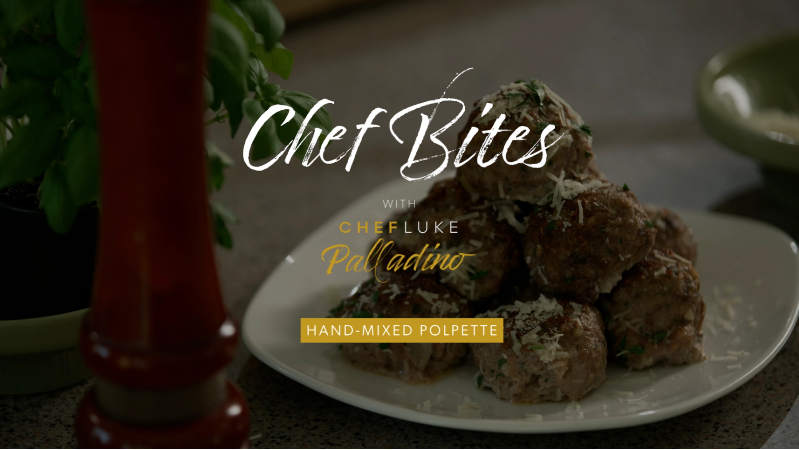

Hand-Mixed Polpette


Subscribe to my YouTube channel:
“Polpette”, Italian for meatballs. My version calls on the holy
trinity of meats veal, pork, beef, and sausage for extra
deliciousness. The secret to a great meatball is a balance of
meats, parmigiano & pecorino cheeses, and bread soaked in milk
to lighten up the texture. No breadcrumbs! This is a Palladino
family favorite!
Ingredients
1 pound ground pork
4 cups, stale bread, diced
1 pound ground beef
1 cup milk
1 pound ground veal
1 egg
1 pound mild Italian sausage
½ cup Parmigiano, grated
1 onion, minced
½ cup Pecorino, grated
2 tablespoons garlic, minced
½ cup Italian parsley, chopped
Method
1.
Sweat onions and garlic in olive oil without color, and
cool.
2.
Place stale bread in 250f oven for 30 min. Completely
cool.
3.
Spread plastic wrap in several shingled layers on work
counter.
4.
Place cool bread pieces into a bowl and pour milk over,
coating thoroughly all over bread. Let stand 10 minutes.
5.
Completely squeeze milk out of bread.
6.
Place all ground meats, cooled onions & garlic, soaked
and drained bread, cheeses, parsley, salt and freshly
ground pepper on the plastic wrap lined counter.
7.
Wearing gloves, start to combine mixture like you are
rolling bread dough, forward and back, and folding onto
itself until well combined.
8.
Make a tester piece, and cook in a frying pan. Taste for
seasoning and cheese. If you prefer more, add it.
9.
Form into balls and cook in a pan, or roast in an oven.
**If making with tomato sauce, pan fry or roast polpette,
cover with sauce and cook 30 minutes. Serve with favorite
pasta shape**
Related Videos